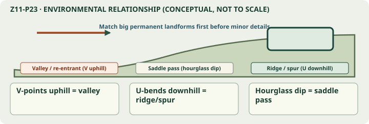

Z11-P23 · Navigation, weather and rescue · New manuscript
Identify ridges, valleys, saddles, spurs and re-entrants on topo maps
Recognize five fundamental 3D landforms on a flat map to keep constant terrain awareness while moving.
When it applies · Foot travel in rolling hills, river bluffs and mountain terrain using topographic maps.
Equipment · Topographic map oriented to terrain.

Actions
- Read U-shaped and V-shaped contour bends carefully: contour V-tips pointing UPHILL (toward higher index numbers) mark valleys, gullies and stream re-entrants, whereas U-bends pointing DOWNHILL mark projecting ridges and spurs.[N03, N02]
- Locate saddles (low hour-glass passes between two higher hilltops) as natural travel gateways and unmistakable terrain checkpoints along ridge routes.[N03, ED]
- Match the big shapes first (major river valley, main ridge crest, lake basin) before hunting for subtle minor bumps that dense trees can hide.[N03, N02]
Failure recognition · Confusing a downhill-pointing spur with an uphill-pointing gully and descending into the wrong watershed drainage.[N03]
Verify · Point to one ridge, one valley/re-entrant and one saddle on your map and match at least two of them to visible surrounding ground.[N03, ED]
Stop or change course · When thick forest or fog hides major landform shapes, shorten checkpoint spacing and stay strictly on verified linear trails or handrails.[N03, N07]
Evidence and editorial notes
- N02 · USGS · Topographic Map Symbols (agency PDF)
- Section: Topographic Map Symbols > Contours, Water, Vegetation and Boundaries · Conditions: Interpreting standard USGS 1:24,000 and US Topo map sheets
Support: Contour spacing indicates slope steepness, index contours give elevation values, blue features mark water/wetlands and standard symbols distinguish roads, trails, cliffs and marshes.
Limitations: Small terrain hazards (boulders, undercut banks, fallen timber, thin ice) fall below map contour interval resolution. · Conflicting evidence: None; anchors terrain and contour interpretation cards.
Editorial note: Explains contour reading alongside map-resolution limitations. · Specialist reviewer: Cartography and search and rescue
Primary source · checked 2026-11-24 - N03 · USGS · What is a Topographic Map (current web edition)
- Section: What is a Topographic Map > Contours and Relief · Conditions: Matching three-dimensional terrain shapes to two-dimensional contour lines
Support: Closed contour rings denote peaks or depressions (hachured), V-patterns point uphill in valleys/drainages and wide spacing marks gentle slopes while tight spacing marks cliffs or steep grades.
Limitations: Dense forest canopy or snow drifts can obscure subtle terrain features shown on the map. · Conflicting evidence: None; core topographic terrain-association evidence.
Editorial note: Supports ridge, valley, saddle and handrail terrain-interpretation cards. · Specialist reviewer: Navigation and cartography
Primary source · checked 2026-11-24
Current assessment · A04-N03 (2026-11-25) · Open: support partial or missing (A04): Contours and depression symbols supported. The broad V/uphill and cliff inference depend on drawing context and saddle/ridge distinction; require dedicated examples. Limits: Specialist review PENDING (Navigation and cartography); publication HOLD. All release decisions pending. - N07 · NWS · Fog Safety (current web edition)
- Section: Fog Safety > Visibility Loss and Travel Hazards · Conditions: Dense fog, valley mist, sea fog and blowing-snow whiteout
Support: Fog and whiteout collapse visual landmarks and depth perception rapidly, causing disorientation and unintentional terrain/traffic hazards; halt exposed travel early and rely on verified checkpoints or stay put.
Limitations: Compass bearings alone cannot reveal hidden cliffs, thin ice or drop-offs in zero visibility. · Conflicting evidence: Aligns with B014-P11 whiteout guidance.
Editorial note: Supports whiteout/fog stop thresholds and short-leg navigation boundaries. · Specialist reviewer: Meteorology and search and rescue
Primary source · checked 2026-11-24
Source lineage · USGS topographic map FAQ; new manuscript · Classification · New manuscript.